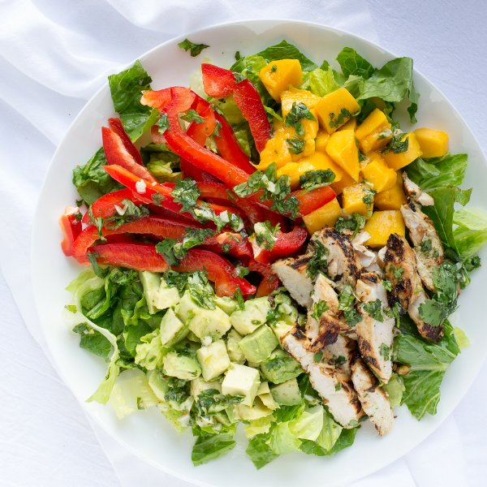

Cilantro Lime Chicken Salad with Mango, Avocado & Bell Pepper

Prep Time
45 min
Nutrition (per serving)
707.8 kcalCalories
32.2 gProtein
49.2 gCarbs
46.2 gFat
Full nutrition table
| Calories | 707.8 kcal |
| Total fat | 46.2 g |
| Saturated fat | 6.8 g |
| Trans fat | 0.1 g |
| Cholesterol | 82.8 mg |
| Sodium | 86.1 mg |
| Carbohydrates | 49.2 g |
| Fiber | 14.8 g |
| Sugars | 31.5 g |
| Protein | 32.2 g |
| Potassium | 1804.7 mg |
| Calcium | 116.2 mg |
| Iron | 3.7 mg |
| Vitamin A | 205.2 IU |
| Vitamin C | 166.5 mg |
| Vitamin D | 1.1 IU |
Cookware
Ingredients
- 2avocados
- 1 lbchicken breasts, boneless skinless
- 1 small bunchcilantro
- 4 clovesgarlic
- 2limes
- 2mangoes
- 2red bell peppers
- 1 headromaine lettuce
- black pepper
- crushed red pepper
- extra virgin olive oil
- honey
- salt
Steps
- Wash and dry the fresh produce.2 avocados
2 limes
2 mangoes
2 red bell peppers
1 head romaine lettuce
1 small bunch cilantro - Shave the cilantro leaves off the stems; discard the stems and mince the leaves.
- Peel and mince the garlic.4 cloves garlic
- Juice the limes into a small bowl, then add ½ of the cilantro (transfer the rest to a small bowl and save for garnishing), minced garlic, olive oil, honey, crushed red pepper, salt, and pepper; whisk together. Pour ½ of the sauce into a medium bowl and set the rest aside.6 tbsp extra virgin olive oil
2 tsp honey
¼ tsp crushed red pepper
1 tsp salt
½ tsp black pepper - Holding a knife parallel to the cutting board, cut the chicken in half horizontally to form thin fillets.1 lb chicken breasts, boneless skinless
- Add the chicken to the medium bowl and coat with the sauce; set aside to marinade for 10 minutes.
- Seed and cut the peppers into strips lengthwise; transfer to a plate.
- Peel the mangoes and cut the flesh away from the pit; medium dice the flesh. Add to the plate next to the pepper.
- Halve and pit the avocados; scoop out the flesh and medium dice. Add to the plate next to the pepper and mango.
- Heat a skillet over medium heat.
- Quarter the lettuce lengthwise, then chop crosswise into 1-inch strips; transfer to a medium bowl.
- Add olive oil to the skillet and swirl to coat the bottom.2 tbsp extra virgin olive oil
- Remove the chicken from the marinade and pat dry with paper towels; place the fillets in the skillet and cook until browned and cooked through, 3 to 4 minutes per side.
- Slice the chicken crosswise into strips.
- Divide the lettuce between plates and layer the peppers, mangoes, avocado, and chicken over top. Drizzle with the remaining sauce and garnish with the remaining cilantro. Enjoy!